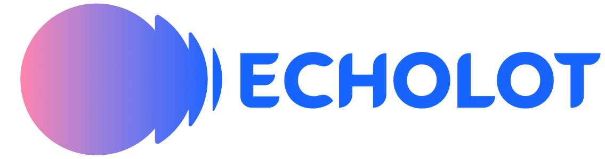
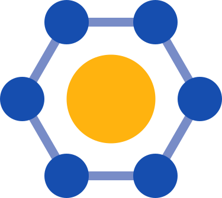
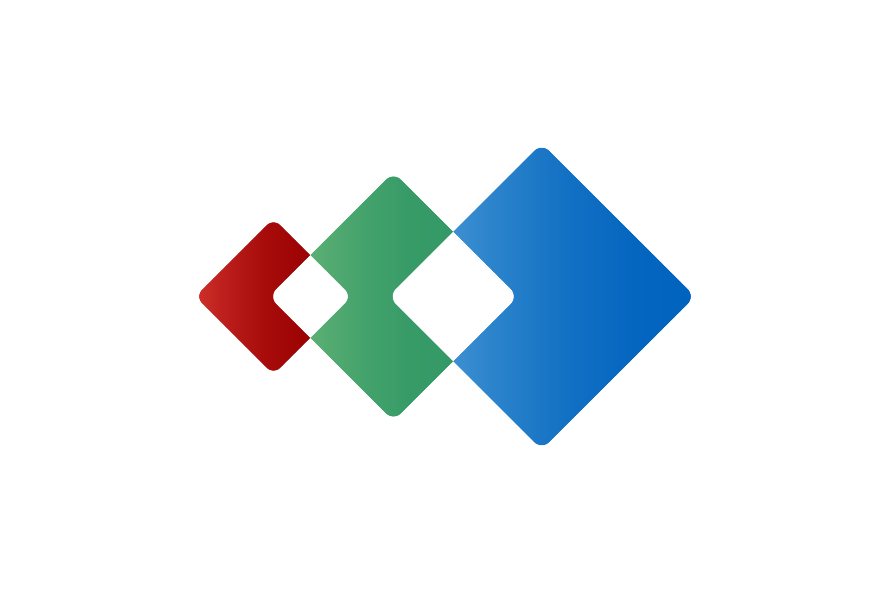

Time for Something New
- SMW is powerful and unique, has issues
- Usability of Notion, Airtable, etc
- SMW 20 years old, Wikibase ~15
- Many lessons learned
Open-source structured data
NeoWiki
10x better
Usability
10x better
Sustainability
Philosophy
Focus on value, not features

European Cultural Heritage: Optimized Linked Open Tools
Mission
Creation, reuse, and dissemination of high-quality, semantically rich cultural heritage data accessible to scholars and institutions of any size.
Technology
Built on knowledge graphs and open-source software (MediaWiki suite) for FAIR data principles and integration with Europeana, DS4CH, and Wikidata.

Core ECHOLOT System
Base technology
MediaWiki
- Ready-made collaborative curation UI
- Extensive library of extensions
- Dedicated developer community
Focus: addressing limitations for cultural heritage, especially structured data and access rights.
Built on top
Hybrid Curation
- Import, export & transformation
- Data reconciliation
- Entity linking & enrichment
- Image recognition & annotation
- Data quality checks
Case Studies & Partners
Basque Cultural Heritage Data
European Literary Bibliography
Connecting Media Arts Collections
Flemish Fine & Performing Arts
Publishing & Roundtripping GLAM Data
- ZKM (DE)
- LI-MA (NL)
- Grey Area (CR)
- Computer History Museum (SI)
- Rhizome (US)
- Zentrum für Netzkunst (DE)
- National Library of Czech Republic
- British Library (UK)
- Wikimedia Sweden
- KMSKA (BE)
- M Leuven (BE)
- MSK Gent (BE)
- Musea Brugge (BE)
- Mu.ZEE (BE)
- Opera Ballet Vlaanderen (BE)
- De Munt (BE)
- Fundación Sancho el Sabio (ES)
- Tabakalera MediaLab (ES)
- Musée Basque Bayonne (FR)
- UEU / INGUMA (ES)
- University of Alicante (ES)
Consortium Partners
- Professional Wiki GmbH (DE)
- Knowledge Management Associates (AT)
- TIB (DE)
- Europeana Foundation (NL)
- DARIAH-EU (FR)
- Austrian Academy of Sciences (AT)
- Czech Academy of Sciences (CZ)
- Polish Academy of Sciences (PL)
- Jozef Stefan Institute (SI)
- University of the Basque Country (ES)
- University of Helsinki (FI)
- PCSS (PL)
- meemoo (BE)
- Australo (EE)
- takin.solutions (BG)
Follow ECHOLOT
NeoWiki for
- NeoWiki powers BlueSpice Galaxy
- Hallo Welt funds NeoWiki
- Active collaboration
NeoWiki Product Vision
-
10x Improvement
-
Coherent product
-
Open source
-
Designed for AI
NeoWiki vs Semantic MediaWiki

Native schemas
Types, constraints, and defaults
Native form-based editing
Derived from schemas
Multiple subjects per page
As a native concept
JSON storage
In revision slots
Standard graph DB
And query language
Modern codebase
Full test coverage
NeoWiki vs Wikibase

Display UIs
Native schemas
Forms
Property graph model
QLever Blazegraph
Inline queries
NeoWiki vs Bucket
Bucket
- Similar philosophy: serve common cases, keep code lean
- Designed for the gaming wiki use cases
- Optimized for power users who write Lua and SQL
NeoWiki
- High-UX views and forms
- Schemas with validation
- Graph database and queries
Get Involved
Professional Wiki